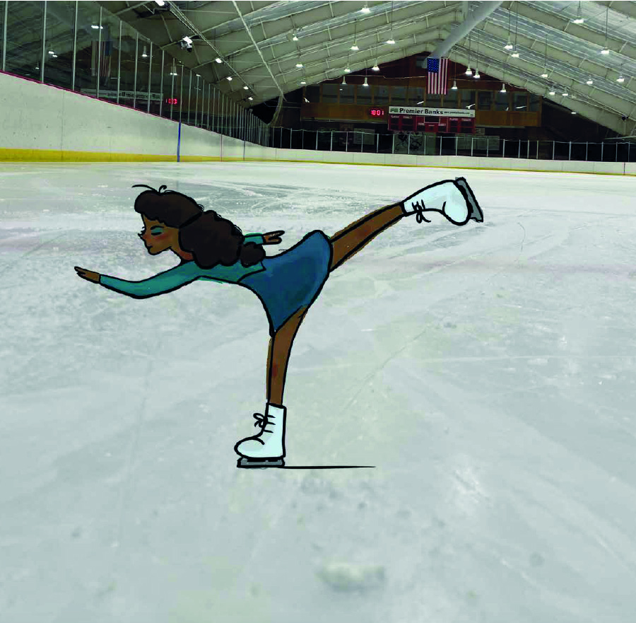
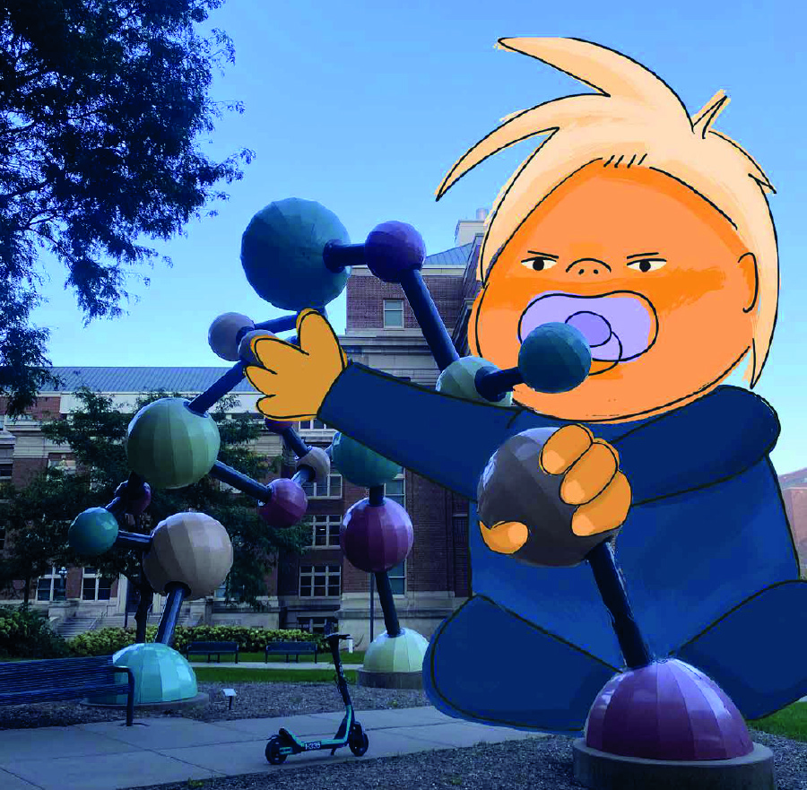
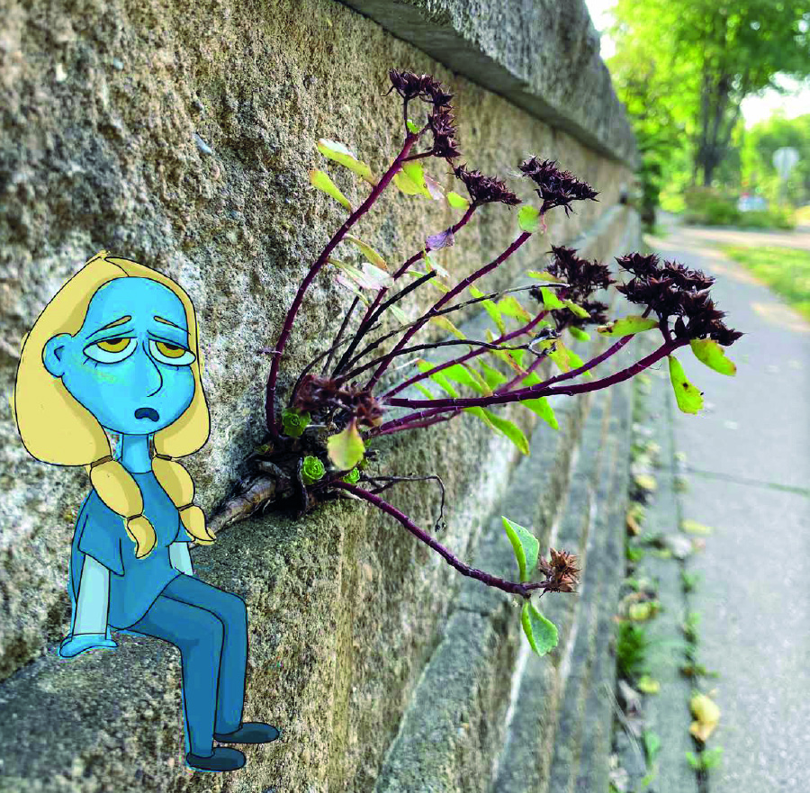
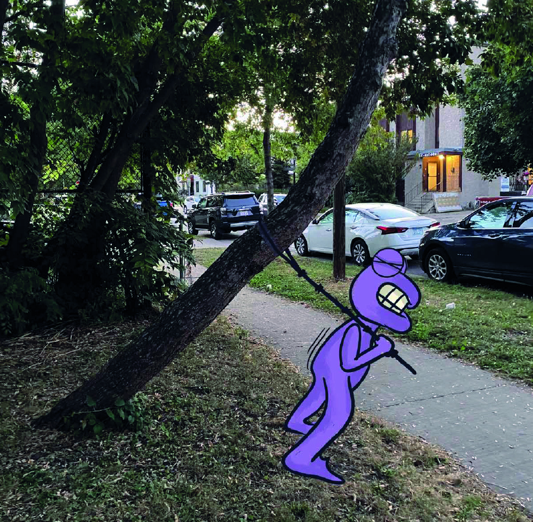
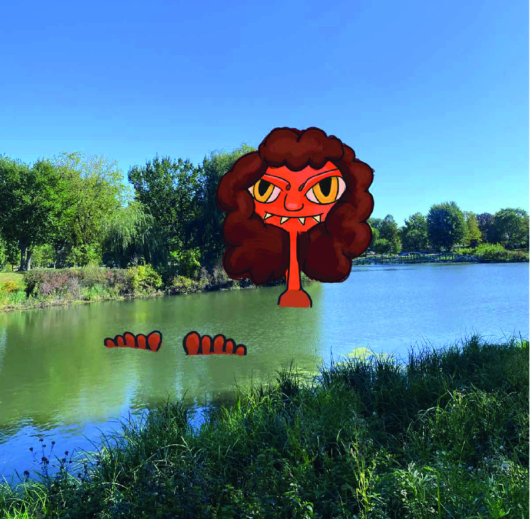
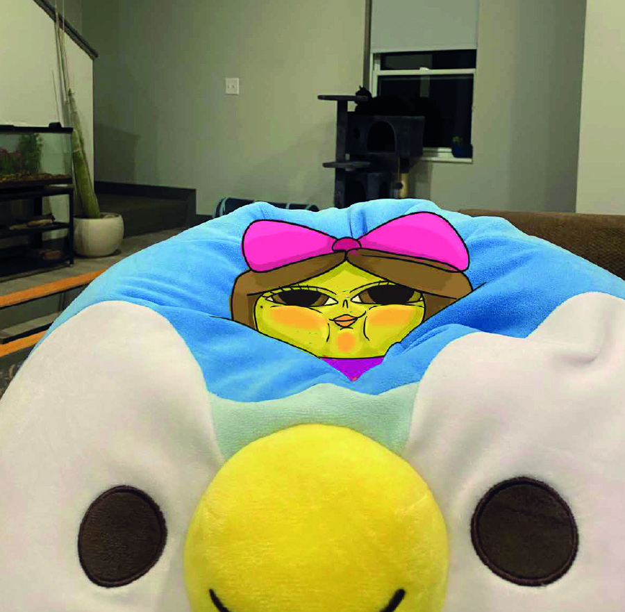
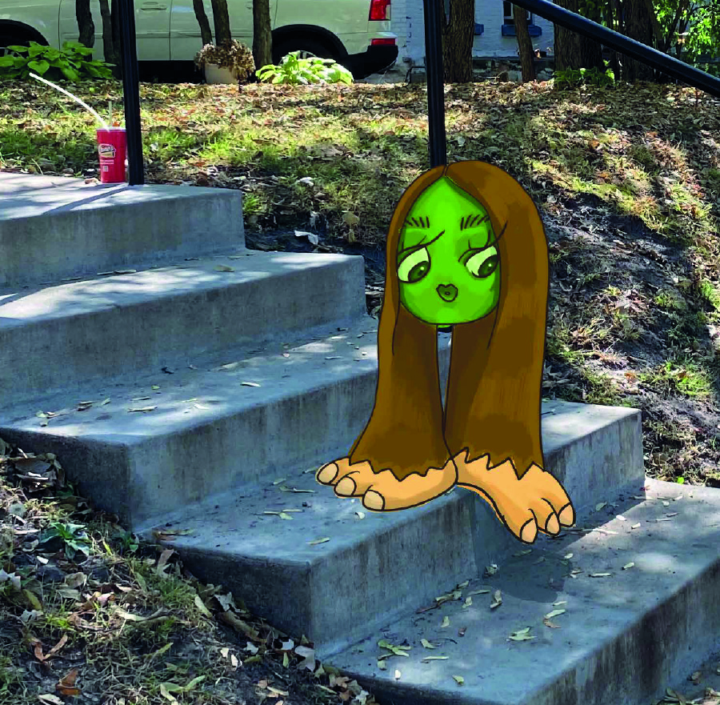
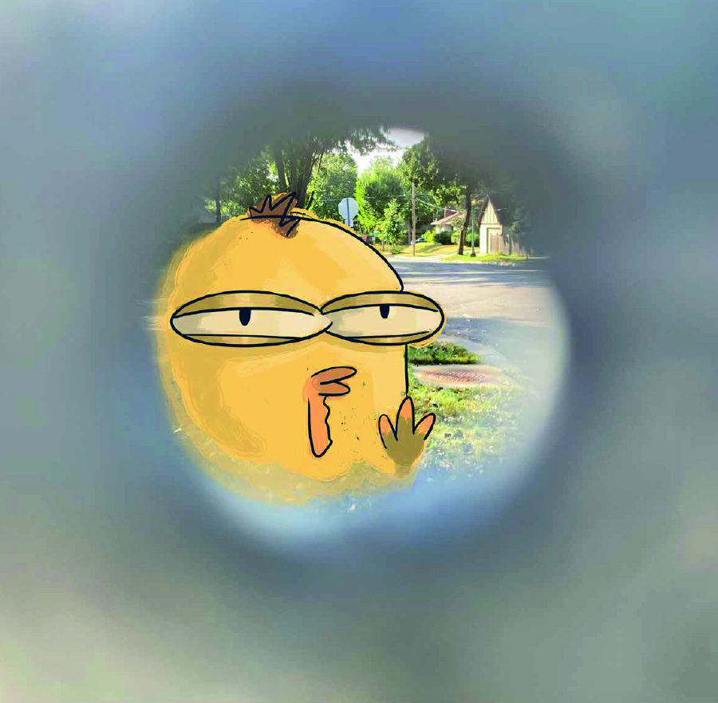
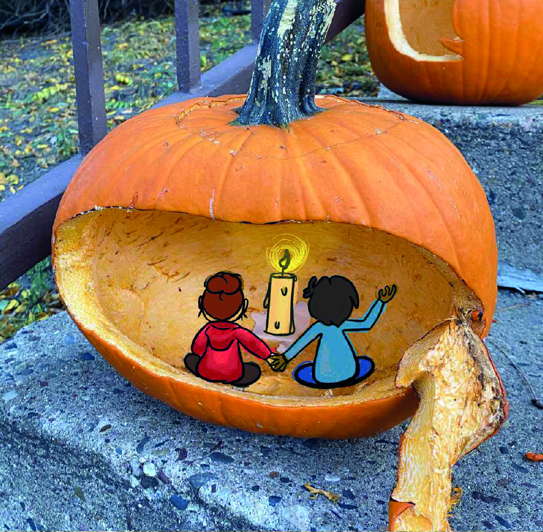
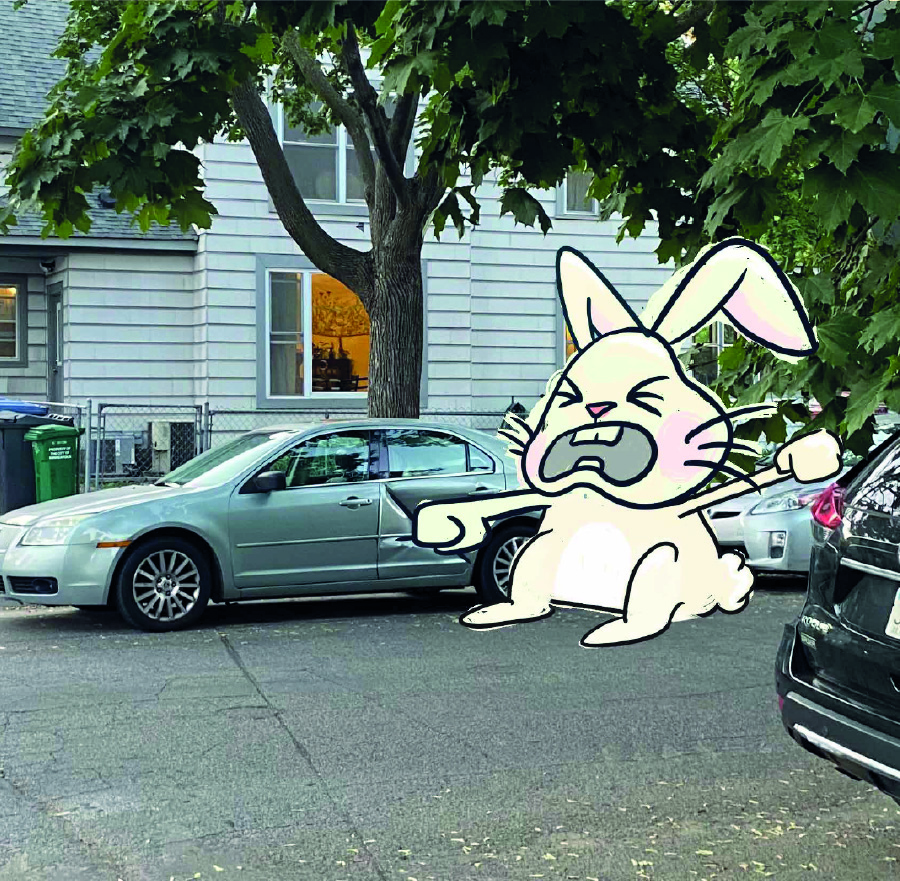

A daily illustration series exploring the integration of hand-drawn elements within photographed environments. Each composition was created intuitively as an exercise in consistency, experimentation, and visual storytelling.









